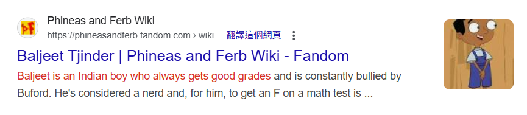

印度族群、膚色與辨識問題：說明文件
本文件整理了一連串關於印度族群、膚色差異、海外辨識，以及美國流行文化中刻板印象的討論，用以說明為何某些印度人特別容易被「看見」，而另一些則在視覺與社會認知中被「隱形」。
一、海外印僑為何常被認為是深膚色？
- 早期海外移民多來自南印度或勞工階層
- 深膚色在視覺上更容易被快速標記為「印度人」
- 膚色較白的印度人常被誤認為白人、中東人或南歐人
你看不到，不代表他們不存在，而是他們沒有被辨識成「印度人」。
二、美國動畫《Phineas and Ferb》中的 Baljeet 設定
- 官方設定 Baljeet 為印度人，刻意畫成深膚色
- 卡通畫風下五官差異弱化，膚色成為主要族群符號
- 若未標明背景，觀眾可能誤認為非裔美國人

三、白皮膚印度人為何容易在歐美「被認錯」？
重要澄清：
「高加索人」是19世紀分類概念，現代遺傳學不再使用。
印度人並非白人的分支，而是多個南亞族群高度混合。
四、Kamala Devi Harris 的族裔背景
- 母親：印度泰米爾裔移民
- 父親：牙買加裔
- 本人認同為美國人，也承認多重族裔背景
五、印度人的血統與族群澄清
有人可能會說「印度人是白人的分支，只是血統純度不如歐洲人」，這是不正確的。
- 北印度人與歐洲人確實共享部分遠古祖先，但這只是一部分基因
- 印度人的基因組成高度混合：
- 南亞古老族群（ASI）
- 印度-歐洲語系入侵族群（ANI）
- 現代遺傳學不使用「高加索人」或「血統純度」來定義族群
- 印度人是獨立混合的南亞族群，而非白人分支
強調：共享祖先不代表「次等」或「不純」，這是舊式人種觀念的誤導。
印度人與歐洲人基因關係示意圖
六、海外與本土角色膚色設計差異
在印度本土背景的故事中，主角通常是膚色較白的北印度人或雅利安人，例如電影演員阿米爾罕（Aamir Khan）就經常飾演白皙的印度角色，觀眾立即知道他是印度人。
但如果故事背景在海外，尤其是美國或歐洲，角色設計往往必須使用深膚色，才能讓觀眾快速辨識出他是印度人。例如美國動畫《Phineas and Ferb》中的Baljeet Rai Patel。
角色膚色設計示意圖：本土 vs 海外
七、總結
- 深膚色印度人在媒體中被過度代表
- 淺膚色印度人常因外觀而在視覺上「隱形」
- 流行文化傾向使用快速可辨識的族群符號
- 被誤認為他族，並不等於族群相同
- 印度人的基因組成複雜，現代遺傳學不支援「印度人是白人的分支」說法
族群辨識更多是社會與文化現象，而非生物學事實。